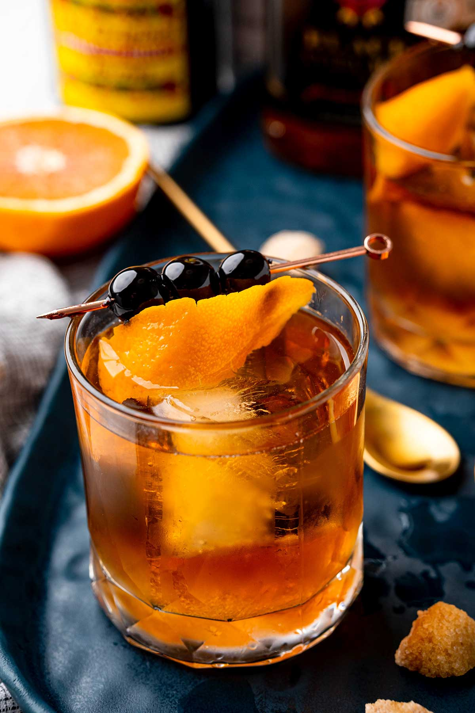

Cocktails: The Classic Old Fashioned

The King of Cocktails
The old fashioned is the quintessential cocktail,
hailing back to the very beginning of cocktail recipes and culture.
A simple blend of bourbon, sugar, and angostura bitters garnished
with an orange twist and punched up with a brandied cherry.
The history of the Old Fashioned stradles the breadth of
cocktail culture with its history and scope of interpretation
over the years. From the austere liqour, sugar, and angostura bitters to
the involved liqour infused with all manner of matter, aperatifs, sweetener blends, and secret bitter blends
adorned with arrangements of dried, cured, and fresh fruits.
The Old Fashioned is one of my favorite drinks for exactly this
reason, it can be adapted for so many situations and cobbled together reliably
in the most dire of situations.
So how do I make The Old Fashioned?
Tools
- Rocks Glass a simple glass with a strong base and straight walls
- Muddler a heavy rod that wont damage the glass
- Jigger a small measuring cup for liquids
- Mixing Glass Optional, the old fashioned can be built in the glass
- Bar spoon
- Skewer/Toothpick
Ingredients
- 3-5 ice cubes plus more if using a mixing glass
- 1 sugar cube
- 1 tsp water
alt. use 1/4 oz simple syrup instead of sugar+water
- 2 dashes angosture bitters (~1/4tsp)
- 2 oz bourbon
- orange twist
- 1 luxardo cherry (+more for garnish)
Preparation
Preparation can take a number of routes, below is
the most common followed by some notes and options
exploring the recipe
- Add sugar+water and bitters to glass and muddle
- Add ice and bourbon to glass
- Stir
- Take the orange peel and bend it lengthways "expressing" the oil over the drink
- Wrap the peel around the cherry and skewer it
- Lay the skewer across the glass and enjoy!
Switch it up
- All in the glass - muddle the sugar and bitters on the orange peel, add bourbon and ice and enjoy!
- In the mixing glass - muddle sugar and bitters. Add bourbon and ice. Stir with Barspoon. Strain into Rocks Glass with fresh Ice and garnish
- Around the bar - Don't like bourbon? Try Rye, Rum, Tequila, or other barrel aged liqour!
Top
Home